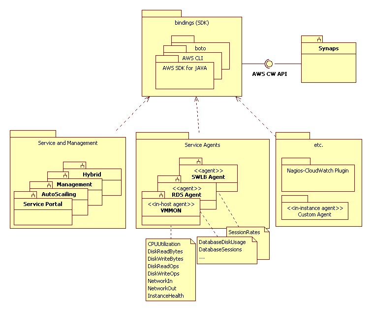
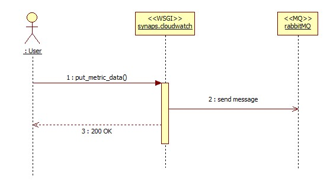
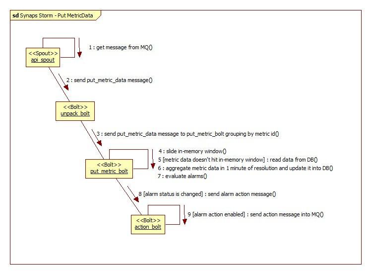
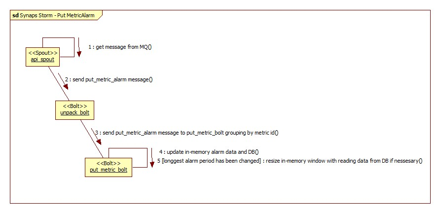
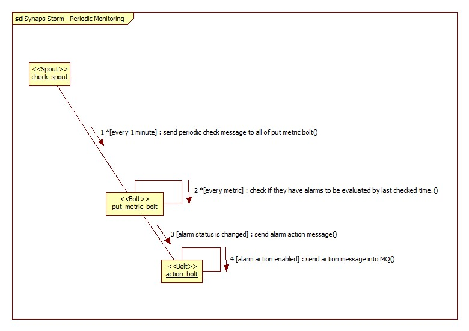

Program Specification¶
Synaps is a cloud monitoring system that collects metric data, provides statistics data, monitors and notifies based on user defined alarms.
It supports users to collect and monitor their default metrics (eg. CPUUtilization, DiskReadOps, DiskWriteOps, DiskReadBytes, DiskWriteBytes, NetworkReadBytes and NetworkWriteBytes) and their own custom metrics also.
It is used to monitor tenant’s applications and services on the OpenStack are working well. If CPUUtiliztion of an instance running their service is greater than the threshold they have been set, they can be notified.
Synaps is linear scalable so that it might be suitable for deploying on the virtual machines as a SaaS(software as a service).
Program Architecture¶
Synaps API is frontend of the system. It uses RabbitMQ for asynchronous processing requested messages. And the messages are passed to Synaps Strom.
Synaps Storm is a topology implementation which is aimed to run on the Twitter Storm, real-time distributed stream processing system. Synaps Storm is based on the message driven architecture. Most of the messages are came from RabbitMQ. It notifies using Notification Queue. Any other notification system can interoperate with the queue.
Both Synaps API and Storm programs are use Cassandra no-sql database to store persistent data.
Following is Architecture of Synaps.

Following is an example of an integrated system.
Externally, Synaps interoperates with agents which inputs metric data periodically, such as VMMON which can get information from VM Hyperisor with libvirt library and Nova API, and custom agent also.
Synaps Notification is a program to send E-mail or SMS.

Program: Synaps API¶
Synaps API is WSGI based Web Server which provides AWS CloudWatch compatible API.
Asynchrous request processing¶
Requests below are processed asynchrously.
- DeleteAlarms
- PutMetricAlarm
- PutMetricData
For example,

Synchrous request processing¶
Requests below are processed synchrously.
- DescribeAlarmHistory
- DescribeAlarms
- DescribeAlarmsForMetric
- DisableAlarmActions
- EnableAlarmActions
- GetMetricStatistics
- ListMetrics
- SetAlarmState
For example,

Program: Synaps Storm¶
Synaps Storm is a topology implementation which is aimed to run on the Twitter Storm, real-time distributed stream processing system.

PutMetricData message processing¶
This function is the most important part of Synaps. When the PutMetricData message is received via RabbitMQ message queue, it reads its in-memory sliding windows or database to aggregate its datapoints and evalutate status of its alarms. If the status is changed, it sends action message to notification queue.

PutMetricAlarm message processing¶
When the PutMetricAlarm message is received via RabbitMQ message queue, it find its metric and update its in-memory alarm data and update it into database.

PeriodicMonitoring message processing¶
‘check_spout’ generates PeriodicMonitoring message every 1 minute. When this is generated, it checks their whole alarms if they are not evaluated alarms recently PutMetricData message processing.
